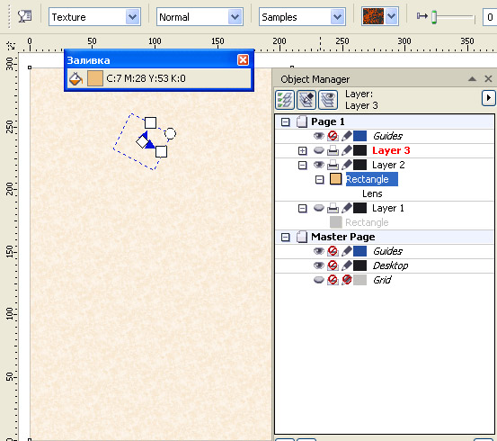
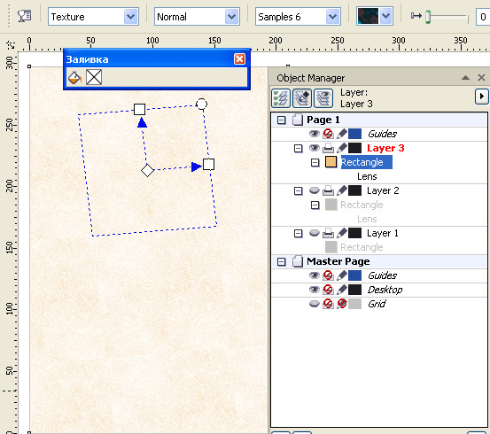
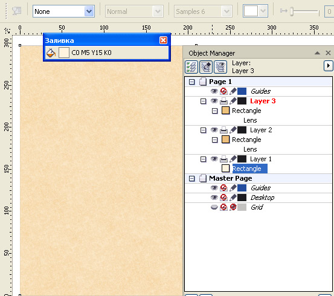
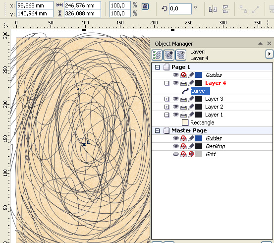
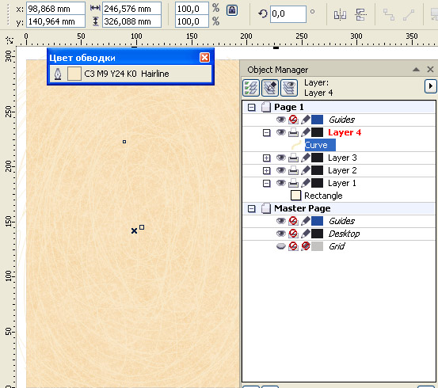
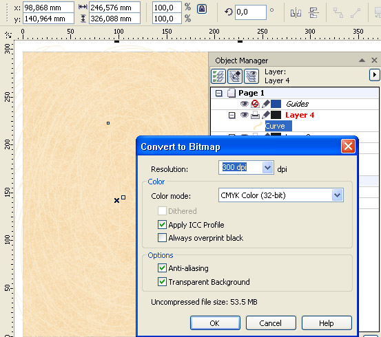
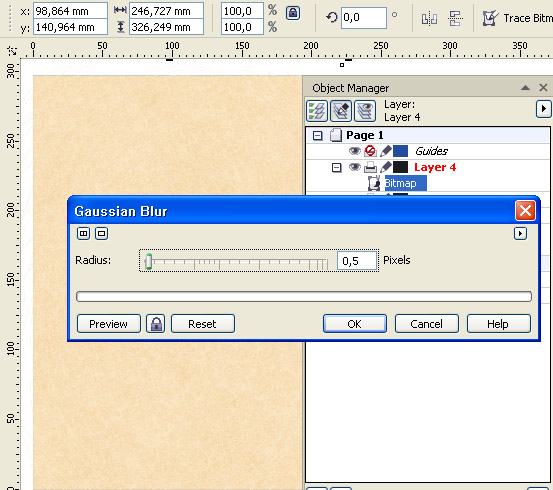
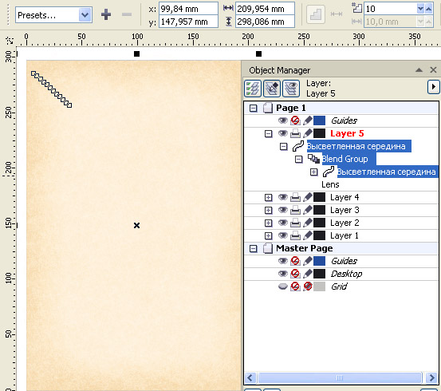

Эффект старения бумаги
Основным эффектом старения бумаги является её пожелтение за счёт фотоэффекта, которое наиболее проявляется по краям, когда листы находятся в пачке, стопке, переплетены в книгу.
Дополнительно будут добавлены мелкие царапины, характерные для плотных листов.
Если Вас устраивает результат, показанный на рисунке ниже, тогда читайте далее.
Сначала создадим фон. Прямоугольник по формату документа (в данном примере А4)
зальём цветом близким к золотому и придадим ему прозрачность (тип прозрачности – текстура; образец из набора Samples: Mineral, Cloudy, или другой, на Ваш вкус).

Создадим дубль прямоугольника и изменим образец текстуры прозрачности на другой (в данном примере из набора Samples 6: Islands in the stream).

В результате получится комбинированная текстура. Тут можно поэксперементировать с вариантами.
Добавив в самый низ ещё один, третий прямоугольник и, изменяя его заливку можно достаточно тонко подобрать общий цветовой тон текстуры фона.

Теперь добавим царапин. Инструментом полилиния нарисуем побольше каракулей, можно штриховок в разных напрвлениях. Толщина линии - волосяная; цвет – светлее фона.


Линию или группу линий царапин растрируем с поддержкой прозрачного фона.

Применим лёгкое размытие линий царапин (в данном примере 0,5 пикс.), степень размытия можете подобрать на Ваш вкус, но в других случаях надо помнить, что величина размытия должна быть соизмерима с толщиной линии.

Теперь надо высветлить середину прямоугольника. Для этого создадим обычную группу перетекания из прямоугольников с неровными краями. Цвет прямоугольников – белый. Число шагов перетекания в данном примере 10, степень прозрачности – 96 %.

Сопутствующие старению элементы, такие как пятна жира и грязи, можете добавить самостоятельно.
Специально для CDRPRO.RU.